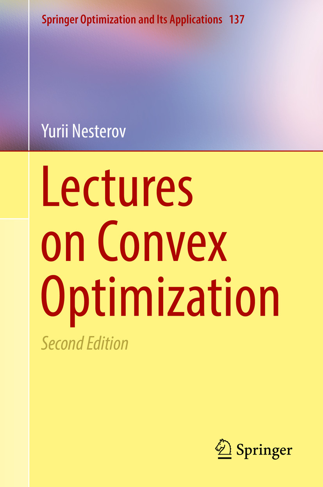

Lectures on Convex Optimization
Second edition
- Presents a self-contained description of fast gradient methods
- Offers the first description in the monographic literature of the modern second-order methods based on cubic regularization
- Provides a comprehensive treatment of the smoothing technique
- Develops a new theory of optimization in relative scale

Errata and comments
- The misprints are highlighted in red and the corresponding suggestions for correction are highlighted in blue. Comments are in italics.
- A negative line number means counting from the bottom to the top of the page.
| Page | Line | Printed | Corrected |
|---|---|---|---|
| 15 | 15 | good approximation to \({\mathcal{I}}\) | good approximation to \({\mathcal{S}}\) |
| 21 | -9 | optimal value of the function \(g\) | optimal value of the function \(f\) |
| 28 | 2 | ready to sudy | ready to study |
| 41 | 3 | local rate … is different | local rates … are different |
| 46 | 2 | solution of | solution to |
| 70 | -7 | \(\nabla f_k(x) = \textcolor{red}{A_kx - e_1} = 0\) | \(\nabla f_k(x) = \textcolor{blue}{\frac{L}{4}(A_kx - e_1)} = 0\) |
| 158 | -8 | \(\frac{1}{\alpha\beta}[f(x + \alpha\beta p) - f(\textcolor{red}{x_0})]\) | \(\frac{1}{\alpha\beta}[f(x + \alpha\beta p) - f(\textcolor{blue}{x})]\) |
| 160 | -4 | \(\left\langle \nabla \rho_{\textcolor{red}{Q}} (x^*), x_1 - x^* \right\rangle\) | \(\left\langle \nabla \rho_{\textcolor{blue}{Q_2}} (x^*), x_1 - x^* \right\rangle\) |
| 160 | -2 | \(\textcolor{red}{\stackrel{(2.2.41)}{\le}}\) | \(\textcolor{blue}{\stackrel{(2.2.52)}{=}}\) |
| 160 | -1 | The proof of Theorem 3.1.3 is not complete, as the final inequalities are not strict. The theorem states that \(Q_1\) and \(Q_2\) are strongly separable, which requires strict inequalities: \(\sup_{x\in Q_1} \left\langle g,x \right\rangle < \gamma < \inf_{y\in Q_2} \left\langle g,y \right\rangle\). To fix this, we can add one more line to the end of the current proof, as follows: Therefore, for any \(x_1\in Q_1\) and \(x_2\in Q_2\) we have: \[\left\langle g^*,x_2 \right\rangle < \left\langle g^*,x_2 \right\rangle + \frac{1}{2}(\rho^*)^2 \le \gamma^* - \frac{1}{2}(\rho^*)^2 \le \left\langle g^*,x_1 \right\rangle - \frac{1}{2}(\rho^*)^2 < \left\langle g^*,x_1 \right\rangle.\] | |
| 161 | 8 | \(g\in \mathop{\mathrm{dom}}\textcolor{red}{\psi}_{Q_2}\) | \(g\in \mathop{\mathrm{dom}}\textcolor{blue}{\xi}_{Q_2}\) |
| 161 | 9 | \(\xi_{Q_1}(g) = \xi_{Q_2}(\textcolor{red}{p})\) | \(\xi_{Q_1}(g) = \xi_{Q_2}(\textcolor{blue}{g})\) |
| 161 | 13 | in view of Corollary 3.1.5 | in view of Corollary 3.1.4 |
| 161 | -5 | In view of Corollary 3.1.5 | In view of Lemma 2.2.7 |
| 169 | 2 | \(f'(\bar{z}\textcolor{red}{,} h) = \dots + f'(\bar{z}\textcolor{red}{,} (0,h_y))\) | \(f'(\bar{z}\textcolor{blue}{;} h) = \dots + f'(\bar{z}\textcolor{blue}{;} (0,h_y))\) |
| 169 | -3 | \(\phi'(x_0\textcolor{red}{,} p)\) | \(\phi'(x_0\textcolor{blue}{;} p)\) |
| 173 | -4 | \(f'(0\textcolor{red}{,} x)\) | \(f'(0\textcolor{blue}{;} x)\) |
| 175 | 3 | \(-\xi_{Q_2}(-\bar{y}) \textcolor{red}{=} \left\langle g_2,\bar{y} \right\rangle\) | \(-\xi_{Q_2}(-\bar{y}) \textcolor{blue}{\le} \left\langle g_2,\bar{y} \right\rangle\) |
| 175 | 3 | \(\xi_{Q_1}(\bar{y}) \le -\xi_{Q_2}(-\bar{y})\) | It is not clear to me why this holds. |
| 178 | -8 | \(\bar{{\mathcal{K}}} \stackrel{\mathrm{def}}{=} \mathrm{cl} ({\mathcal{K}}(\textcolor{red}{\bar{x}}))\) | \(\bar{{\mathcal{K}}} \stackrel{\mathrm{def}}{=} \mathrm{cl} ({\mathcal{K}}(\textcolor{blue}{Q - \bar{x}}))\) |
| 183 | -8 | \(c = \textcolor{red}{\lambda^* Ax^*}\) | \(c = \textcolor{blue}{2\lambda^* Ax^*}\) |
| 183 | -7 | \(\lambda^* = \textcolor{red}{\langle c,A^{-1}c \rangle^{1/2}}, x^* = \textcolor{red}{\frac{1}{\lambda^*A^{-1}c}}\) | \(\lambda^* = \textcolor{blue}{\frac{1}{2}\langle c,A^{-1}c \rangle^{1/2}}, x^* = \textcolor{blue}{\frac{1}{2\lambda^*A^{-1}c}}\) |
| Although the current results are technically correct, rescaling \(\lambda^*\) could make the notation more consistent with Theorem 3.1.26, because the derivative of \(\left\langle Ax,x \right\rangle\) is \(2Ax\). | |||
| 186 | -6 | \(\left\langle \bar{y}, b-Ax_* \right\rangle = \left\| b- A\textcolor{red}{\bar{x}} \right\|\) | \(\left\langle \bar{y}, b-Ax_* \right\rangle = \left\| b- A\textcolor{blue}{x_*} \right\|\) |
| 186 | -5 | \(x_{\delta} \stackrel{\mathrm{def}}{=} \bar{x} + \delta \stackrel{\textcolor{red}{(3.1.70)}}{\in} Q\) | \(x_{\delta} \stackrel{\mathrm{def}}{=} \bar{x} + \delta \stackrel{\textcolor{blue}{(3.1.69)}}{\in} Q\) |
| 188 | 4 | \(\stackrel{(3.1.74)}{\ge} \textcolor{red}{\langle A^Ty^*,x(u_2) -x^*\rangle}\) | \(\stackrel{(3.1.74)}{\ge} \textcolor{blue}{f(x^*) + \langle A^Ty^*,x(u_2) -x^*\rangle}\) |
| 191 | 1 | let \(\bar{u} = \sum_{i=1}^{k} \textcolor{red}{u_i}\) | let \(\bar{u} = \sum_{i=1}^{k} \textcolor{blue}{\lambda^{(i)} u_i}\) |
| 194 | 3 | \(\stackrel{(3.1.23)}{\ge} \textcolor{red}{\min_{x\in P}} \sum_{k=0}^{N}\dots\) | \(\stackrel{(3.1.23)}{\ge} \textcolor{blue}{\max_{x\in P}} \sum_{k=0}^{N}\dots\) |
| 195 | -4 | for any \(x,y\in B_2(\textcolor{red}{x^*},\rho)\) | for any \(x,y\in B_2(\textcolor{blue}{x_k^*},\rho)\) |
| 205 | -4 | then \(\textcolor{red}{{\mathcal{F}}}_A(N) \neq \emptyset\) | then \(\textcolor{blue}{{\mathcal{I}}}_A(N) \neq \emptyset\) |
| 205 | -1 | \(f(x_k) - f^* \textcolor{red}{\ge} \epsilon\) | \(f(x_k) - f^* \textcolor{blue}{>} \epsilon\) |
| The contradiction of (3.2.27) should be a strict inequality. An alternative fix could be replacing “\(\le\)” in (3.2.27) with “\(<\)”. | |||
| 206 | 2 | \(\left\| x_k - \textcolor{red}{\frac{\epsilon}{\left\| g(x_k) \right\|^2}g(x_k)} \right\|^2\) | \(\left\| x_k - \textcolor{blue}{\frac{\epsilon}{\left\| g(x_k) \right\|^2}g(x_k) -x^*} \right\|^2\) |
| 206 | 5 | \(\left\| x_k - \textcolor{red}{\frac{\bar{f}(x_k)}{\left\| \bar{g}(x_k) \right\|^2}\bar{g}(x_k)} \right\|^2\) | \(\left\| x_k - \textcolor{blue}{\frac{\bar{f}(x_k)}{\left\| \bar{g}(x_k) \right\|^2}\bar{g}(x_k) - x^*} \right\|^2\) |
| 212 | \(R_{\textcolor{red}{k}},x^*_{\textcolor{red}{k}},f_{\textcolor{red}{k}}\) | \(R_{\textcolor{blue}{k+1}},x^*_{\textcolor{blue}{k+1}},f_{\textcolor{blue}{k+1}}\) | |
| In the proof of Theorem 3.2.5, after equation (3.2.44), all subscripts \(k\) should be replaced by \(k+1\), except in the last line of the proof. | |||
| 213 | 8 | \(\left\| x_k - \textcolor{red}{h_kg(x_k)} \right\|^2\) | \(\left\| x_k - \textcolor{blue}{h_kg(x_k) - x^*} \right\|^2\) |
| 242 | -12 | at point a \(x_k\) | at a point \(x_k\) |
| 244 | 5 | \(x\in{\mathcal{L}}\textcolor{red}{(}f(x_0)\) | \(x\in{\mathcal{L}}\textcolor{blue}{(}f(x_0)\textcolor{blue}{)}\) |
Last updated: November 23, 2020.